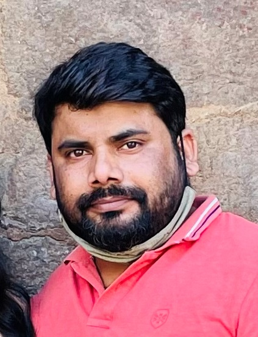

Gorakh Yadav

Career Objective:
To strive for growth in terms of value addition, knowledge, learning; thereby optimizing a goal congruent behavior with a balanced tradeoff between technical and management skills to elevate the self and the organization into higher and profitable peaks.
Academic Qualification:
- 2010 - B. Tech in Information Technology from I.T.M. Gida Gorakhpur (UPTU) in 2010 with 64%.
- 2004 - Senior Secondary Certificate Exam (12th) from U.P. Board, Gorakhpur in 2004 with 66%
- 2002 - Higher Secondary Certificate Exam (10th) from U.P.Board, Gorakhpur in 2002 with 62%.
Experience:
- Department of Food Safety GNCTD through Intelligent Communication Systems India Limited
March 2015 to Dec 2022
Designation: (Assistant Programmer)
- Department of Food Safety GNCTD through E CENTRIC SOLUTIONS PVT LTD
June 2013 to Feb 2015
Designation: (Assistant Programmer)
- Delhi Secretariatthrough Wipro InfoTech Pvt. Ltd.
May -2012 – May 2013
Designation: (Associate - Network Management)
- District Magistrate office (West) through 3i InfoTech Pvt. Ltd.
Nov -2010 –April 2012
Designation: (Field Engineer in IT Infrastructure)
Roles & Responsibilities:
- Development and Maintenance of web based application software.
- e-Office, e-Tender, GeM, PFMS & Modification in Department Website.
- Software/Hardware & Networking related issues and their troubleshooting
- Server management and Backup.
- Technical support to the Department Officers/Officials.
- Imparting training to the manpower (Technical and Non-Technical).
- Updation and incorporation of new directions/decisions of the state authority in the web based FoSCoS (Food Safety Compliance System) and any other related problems
Recent Projects:
- Enforcement Data Management System (EDMS)
- Surveillance Sample Management System for NABL Accredited Labs
- Sample Receiving Module
Technical Skills:
- Skills : .Net Framework, .Net Core
- Database : Microsoft Sql Server, My SQL
- Language : C#,HTML,CSS,Javascript,BootStrap
Achievements/Awards/Extra Curricular:
- Appreciation from Commissioner (Food Safety) for Implementing Online Payment in the Department for Licensing/Registrations. The department collaborated with SBI in order to forgo the challan based system by introducing payment through different digital means.
- Worked for the data management cell for migrant workers (of UP) during COVID-19.
- Worked as Organizer in 10th National Street Food Festival, organized by FSSAI.
Other Details